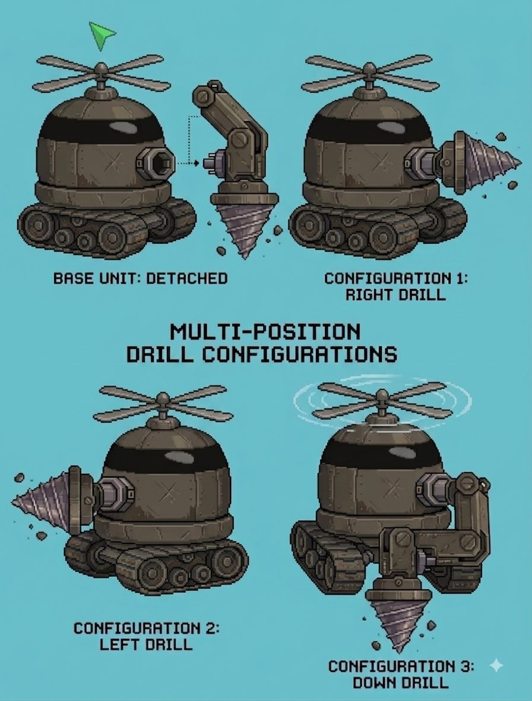
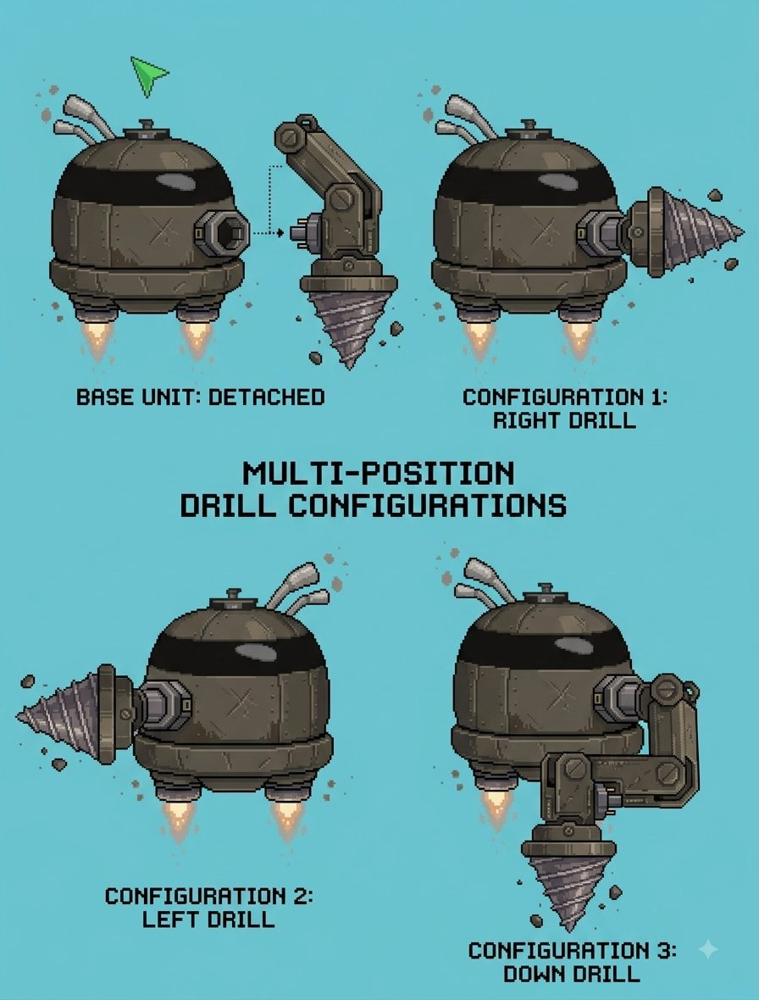
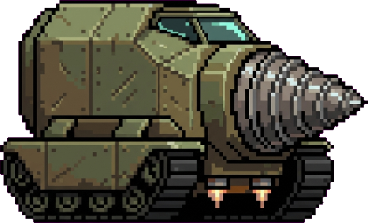
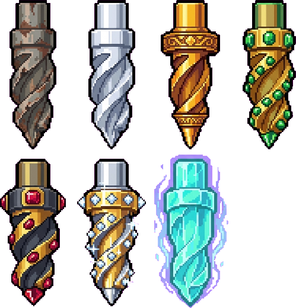
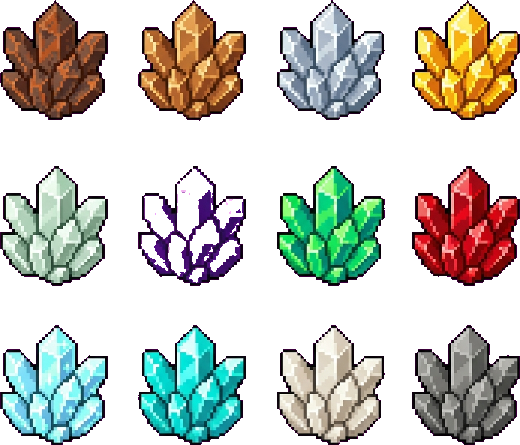
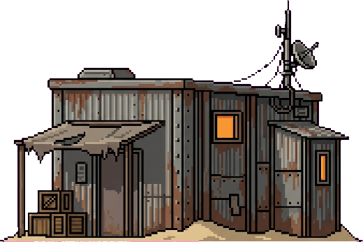

Index / Item 10
The Last
Directive
A remaster-in-spirit of the 2004 Flash game Motherload: dig down, haul ore up, upgrade the pod, find out what's actually under the colony.
- Part
- Mining game
- Built with
- TypeScript, Vite
- Runs in
- The browser
- Status
- In development
Concept

Multi-position drill configurations
Drill configurations, second passArt

The mining pod
Drill upgrades
Ores
Outfitter, on the surfaceSprites generated, then chroma-keyed, trimmed, and downscaled by the project's own pipeline.
Specifications
- Setting
- Venice: a planet sold to investors on a name that promised water, which turned out to be a barren dig site
- Loop
- Dig, haul, sell, upgrade. Fuel, cargo, and hull are the tension.
- World
- A port of the original's world generator, so the terrain is natural rather than hand-placed
- Physics
- Constants and upgrade tables measured from the original game
- Story
- An opening in the lab whose checklist doubles as the tutorial, and an ending chamber with a choice
- UI
- Pip-Boy style CRT chrome: bezel, phosphor, scanlines
- Rendering
- Procedural tile textures and HUD, drawn in code
- Assets
- All art, audio, text, and names are original. None of the original game's assets are in the project.
- Plan
- Godot 4, exporting to web, iOS, Android, and Steam
How it got built
To be writtenWhy remake Motherload, and what you changed from the original.
Gameplay, diggingThe surface shops